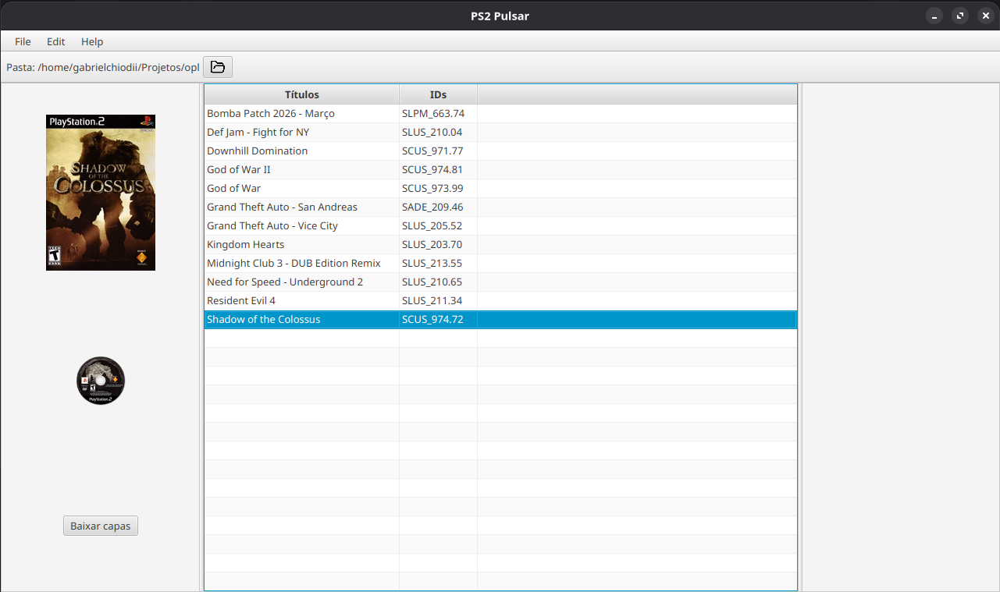

PS2 Pulsar
Um novo gerenciador de jogos e homebrews aberto e multiplataforma para PlayStation 2.
Tanto o site quanto o projeto ainda estão em estagios iniciais de desenvolvimento...

Changelog - Inicial Commit
- Suporte inicial ao OPL;
- Seleção do diretório do OPL;
- Criação dos diretórios padrão do OPL;
- Identificação de jogos nas pastas CD e DVD;
- Obtenção dos IDs dos jogos a partir de arquivos ISO;
- Download de capas frontais e ícones de disco;
Repositório do projeto: github.com/GabrielChiodiI/PS2-Pulsar